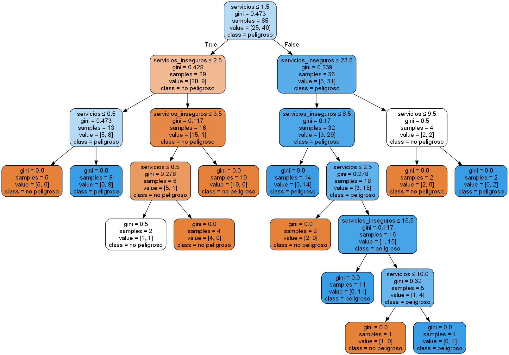

Centro de Mando Integrado
Atras
Ejercicio 5: Arbol de Decision
Utilizando un Arbol de Decision podemos predecir si un dispositivo es peligroso o no.
Numero de dispositivos NO peligrosos: {{num_no}}
Numero de dispositivos SI peligrosos: {{num_si}}
{% if graph %}  {% endif %}